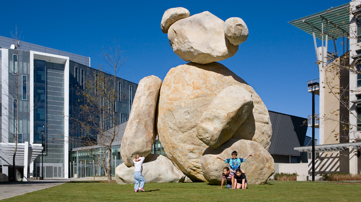

Experience
Research Intern, Scripps Research (6/2021 – Present)
- Research internship as part of the Stowers Lab in Dorris Neuroscience Center until June 2021
- Working on project studying factors behind physiological arousal
- Using machine learning tools like DeepLabCut to extract pose data from experimental mouse video
Research Intern, UCSD CSE (6/2021 – 12/2021)
- Studied impact of UCSD's Early Research Scholars Program on early undergraduates' sense of research and computing identity, as well as their understanding of research
- Used thematic analysis to analyze open-ended survey responses
- Currently working towards publication as co-first author
Research Intern, Qualcomm Institute (10/2020 – 5/2021)
- Co-first author on research project relating to online education -- now in press with Frontiers in Education!
- Surveyed UCSD students' attitudes towards various parts of online learning experience
- Analyze data from UCSD campus databases and course evaluations using Python, R
Machine Learning/Software Engineering Intern, Percolata (6/2020 – 9/2020)
- Worked on software development of product for automating day trading strategies, written in Python and based in Google Cloud Platform
- Ran machine learning experiments on timeseries financial data, including ARIMA, EMA, LSTM, XGBoost, RSI, among others
- Used Python, SQL, Google Cloud Platform, timeseries forecasting, Keras, gradient boosting
Halıcıoğlu Institute Sponsored Research Scholarship, Chatterbug (9/2019 – 5/2020)
- Developed ML approach for success prediction in language learning service based on user-generated data during free trial period
- Used SQL, Python, Mode, Jupyter notebooks to extract and analyze data
- Worked alongside Chatterbug chief data scientist and UCSD faculty advisors
Pembroke-King's Summer Programme, University of Cambridge (6/2020 – 7/2020)
- Took courses with Cambridge lecturers in linguistics, cybersecurity, and European history
- Wrote dissertations on popular support for Nazi Germany, cognitive benefits of bilingualism, and open source intelligence & security